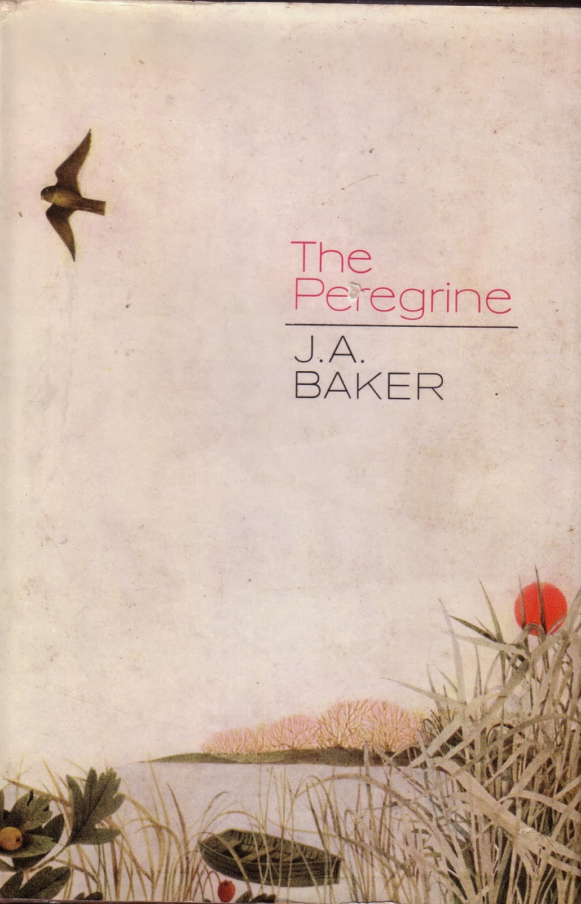
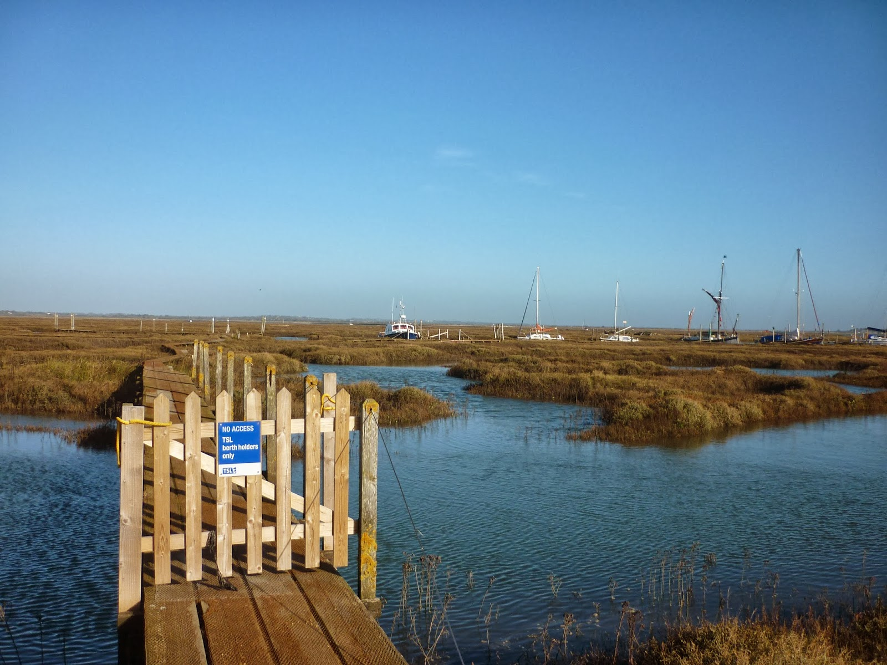

{kind=link}
A friend who is a professor at Ankara
University mentions that she's reading Daniel Defoe as part of her
current research into the relationship between Place and Fiction:
James Canton, a lecturer at Essex University runs an MA course in
'Wild Writing'. I'm reading his book Out of Essex: Re-Imagining a
Literary Landscape and realise
that the next chapter is entitled 'Finding Defoe. Mmmm, yes, I like this minor coincidence and I like Defoe as well. His A Tour Through the Whole Island of Great Britain (1724)
is an impressive early example of travel journalism and Robinson
Crusoe (1719) is the
great-grand-daddy of all adventure stories. One presents itself as
fact and the other as fiction, yet they're not so far apart: Crusoe
was based on a genuine piece of experience -- Alexander Selkirk's
solitary survival on a Pacific Island -- and the Tour
is by no means all sober reportage.
James
Canton carries out a simple piece of fact-checking into one of its best-known episodes. Defoe
is across the river from the Canvey Island marshes in Essex and has heard of a
farmer who is living with his 25th
wife and whose son, aged 35, is on his 14th.
The reason is […] that they being
bred in the marshes themselves and season'd to the place, did pretty
well with it but that they always went up into the hilly country […]
for a wife. That when they took the young lasses out of the wholesome and fresh air, they were healthy, fresh and clear, and well: but when
they came out of their native air into the marshes among the fogs and
damps, there they presently changed their complexion, got and ague or
two and seldom held it above half a year or a year at most and then,
said he, we go to the uplands and fetch another.
Canton
sets out to check the graveyards of the Essex marsh churches for the serried ranks of dead 'upland' wives. But they're not there. This most famous passage
in the Tour is … a
traveller's tale.
Out of Essex: Re-Imagining a
Literary Landscape, takes ten
writers and investigates their links with the county, often checking
some small specific point and allowing the process of investigation
to throw up intriguing encounters, serendipities, blind alleys. It
works especially well when Canton is indulging his own love of
marshes and mudflats. He's a keen and knowledgeable bird watcher and
the chapter in which he focuses on J. A. Baker, author of The
Peregrine (1967) is possibly my
favourite. Baker was intensely reclusive, not a lover of his fellow
humans but someone who managed to become acceptable to the hawks. The
Times reviewer
wondered whether Mr Baker “was a tiercel in a previous
incarnation.” Canton searches for Baker through the lanes and
villages of the Essex countryside and finally discovers that his
address was a house in the middle of Chelmsford.
{kind=link}

It's a shock but a constructive, stimulating shock which forces one to think again about the dangerousness of judging by appearances, even literary appearances. Admiration for Baker's extraordinary elegiac writing led readers to mythologise his life, to assume he had achieved his ambition to be “out there at the edge of things, to let the human taint wash away in emptiness and sorrow as the fox sloughs his smell away in the cold unworldiness of water”. In fact he worked for Chelmsford's soft drinks manufacturer, Britvic. I was given The Peregrine in 1967 for my 13th birthday and was mainly shocked by Baker's insight into humans as predators “We are the killers. We stink of death.We carry it with us. It sticks to us like frost. We cannot tear it away.” Now I look at it again and see astonishing writing on every page but none more so that the simple opening of the second part: “The hardest thing of all to see is what is really there.”
Out of Essex
has chapters on other favourite authors. There's Margery Allingham,
who so often used marshes as a location “at the edge of things”,
where a villain might flee and go no further, where a body, might
vanish deep into the greedy mud. Allingham's first novel was inspired
by the history and mystery of Mersea Island on the River Blackwater
and Canton also includes a chapter on the hapless Sabine
Baring-Gould, miserable as Rector of East Mersea, producing Mehalah,
a novel of ebb tides, twisting channels and morality to match. He
quotes John Fowles's introduction to the 1969 edition. “The vast,
god-denying skies, the endless grey horizon, the icy north-easterlies
[…] the whole area is set to the key of winter – it is for the
dour the taciturn the solitary mussel-picker, the wildfowler, the
anachronisms in our age. And it is this bleak waste-land, not Elijah
Rebow, that is the real villain of Sabine Baring-Gould's remarkable
novel.” Fowles knew whereof he wrote – he was born in Leigh on
Sea, immortalised by Betjemen for its “level wastes of sucking
mud.”
I went
walking by the River Blackwater on Sunday, setting out from Tollesbury to skirt the edge of the
Old Hall marshes. I watched the tide come up and fill the twisting
channels that may lead nowhere. I saw it cover the whole area with a
blank deceptive sheet that offered little hint of the depths and
shallows underneath – except perhaps through the ripple patterns,
so difficult to decipher. The afternoon began to fade and the Brent
geese came flying over me to feed on the fields inland. I left before
the ebb could pull the water off again and remind me of the
complexity that lay beneath. When I got home and looked at a map of the place that I'd been I couldn't help thinking that it looked like some mysterious region of the body. Perhaps even my brain.http://www.streetmap.co.uk/map.srf?x=597500&y=212500&z=120&sv=old+hall&st=3&tl=Map+of+Old+Hall+Marshes,+Essex+&searchp=ids.srf try the 1:25000 scale
{kind=link}
These marshy
places, that are neither sea nor land, that change so utterly and so
inexorably, where the relationship of the surface and the depth is
never constant – they seem to say something about the difficulty of
knowing. Another of Canton's chapters focussed on Arthur Ransome's
Secret Water – set in Essex's Walton Backwaters and a
lifelong favourite. I felt faintly irritated by Canton's repeated use
of the word 'imperial' to describe the Walker children's
determination to map this strange new area, so different from the
Lakes. 'Imperial' has connotations of arrogance and exploitation and it's also become the teensiest bit of an academic cliché. Yes there are 'natives' in Secret Water and totems and references back to Robinson Crusoe but these are all part of a game. Secret Water is a story of exploration, not conquest. “Real exploration … Islands, and islands of a kind they had never seen …
an empty map to be filled with discoveries that they would make
themselves.”
Maps are a means to understand places: most civilisations make maps, though many are constructed on quite different principles to the Western cartography used by Ransome's Swallows – read Hugh Brody's description of Native American mapping in Maps and Dreams or the stick-and-shell maps of the Marshall Islanders in Micronesia as described by John Mack in The Sea, a Cultural History. Canton set out to explore the Walton Backwaters accompanied by a nine-year-old nephew who entered willingly into the spirit of adventure. "The story had caught Jake's imagination. Instead of playing Ashes '09 on the Wii, he was ardently finishing off his beautifully constructed map to an island landscape that was both real and imagined." Jake's urge to find his own names for this unfamiliar place is a serious attempt to make a story from his experience "You know," began Jake [...] 'I think we should call the place where my boot came off Sticky End.'" Without making the obvious connection to 'mind-mapping' this attempt to fix as well as to explore experience is surely what we do when writing? Ransome's Secret Water maps are still used by yachtsmen visiting the Walton Backwaters, young Jake's, with all due respect, probably won't be. I return to J.A. Baker's insight, “The hardest thing of all to see is what is really there.”
 |
| Tollesbury Saltings in November 2013, looking across to Mersea Island |
{kind=link}